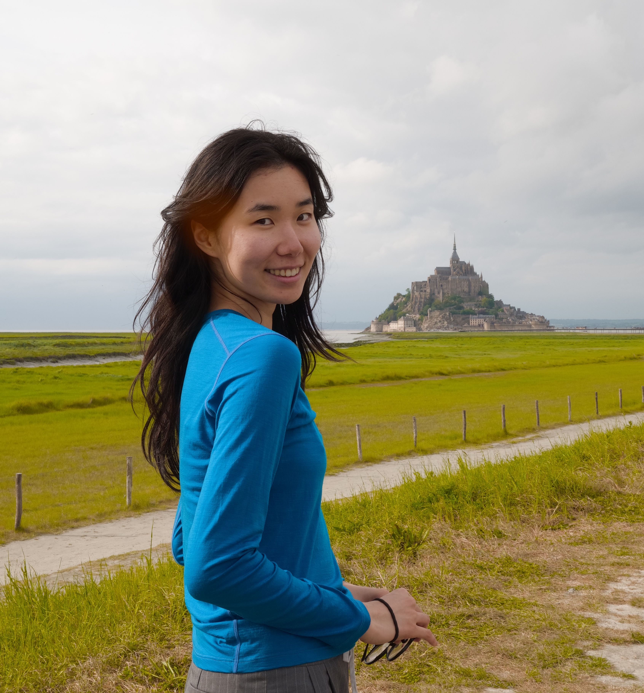

PhD Researcher, TU Eindhoven
I'm a PhD researcher at TU Eindhoven, advised by Dr. Aaqib Saeed and Dr. Mathias Funk. My research interests include multimodal learning (fundamental understanding) and AI agents for healthcare applications.
Previously, I completed an MSc in Brain and Cognitive Sciences at the University of Amsterdam and a BA in Philosophy (Science & Logic) at Peking University.
Open to collaboration on audio reasoning benchmarks, multimodal safety, and medical AI data. Feel free to reach out.